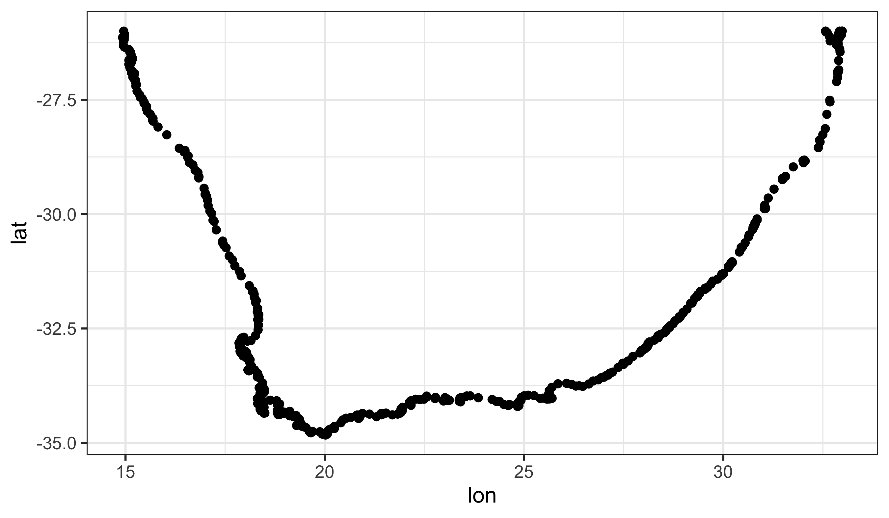
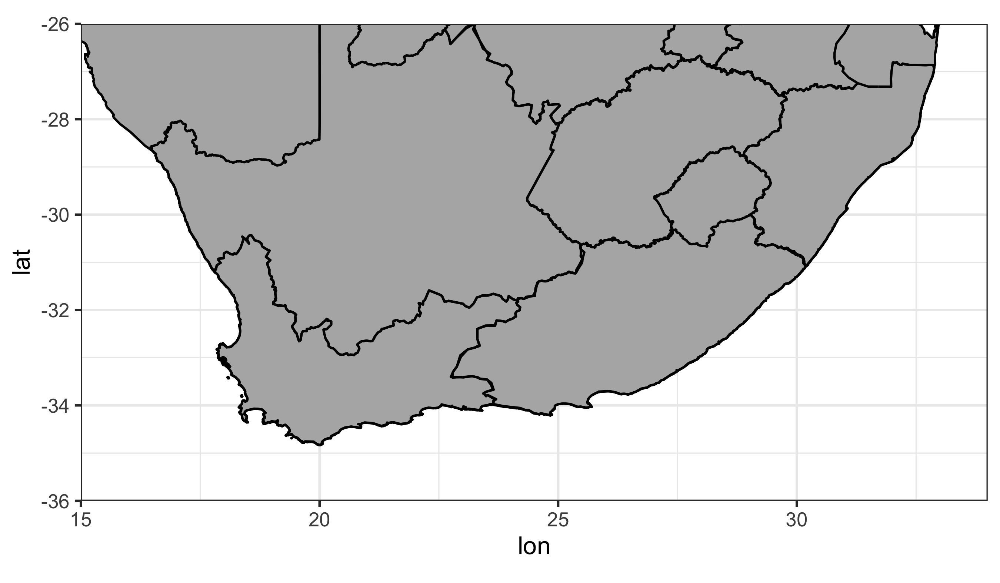
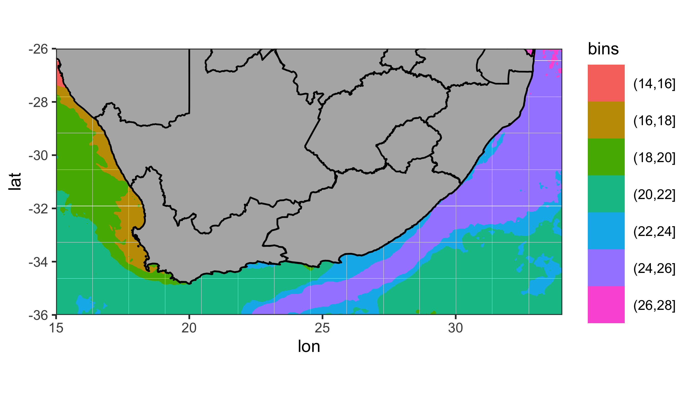

# Load libraries
library(tidyverse)
library(ggpubr)
# Load data
load(here::here("data", "BCB744", "south_africa_coast.Rdata"))
load(here::here("data", "BCB744", "sa_provinces.RData"))
load(here::here("data", "BCB744", "rast_annual.Rdata"))
load(here::here("data", "BCB744", "MUR.Rdata"))
load(here::here("data", "BCB744", "MUR_low_res.RData"))
# Choose which SST product you would like to use
sst <- MUR_low_res
# OR
sst <- MUR
# The colour palette we will use for ocean temperature
cols11 <- c("#004dcd", "#0068db", "#007ddb", "#008dcf", "#009bbc",
"#00a7a9", "#1bb298", "#6cba8f", "#9ac290", "#bec99a")12. Mapping with ggplot2
Smit, A. J. ![]()


“Graphical excellence is that which gives the viewer the greatest number of ideas in the shortest time with the least ink in the smallest space.”
— Edward Tufte
“Here be dragons.”
— Unknown
Yesterday you learned how to create ggplot2 figures, change their aesthetics, labels, colour palettes, and facet/arrange them. Now you are going to look at how to create maps. In maps, it helps to distinguish fill (area) from colour (line). Polygons and rasters are usually filled, while borders and paths are typically just coloured lines.
Most of the work that you will perform as environmental/biological scientists involves going out to a location and sampling information there. Sometimes only once, and sometimes over a period of time. All of these different sampling methods lend themselves to different types of figures. One of those, collection of data at different points, is best shown with maps. As you will see over the course of Day 3, creating maps in ggplot2 is very straight forward and is extensively supported. For that reason you are going to have plenty of time to also learn how to do some more advanced things. Your goal in this chapter is to produce the figure below.

1 Using Prepared Data
Before you begin let us go ahead and load the packages you will need, as well as several dataframes required to make the final product.
2 A New Concept?
The idea of creating a map in R may be daunting to some, but remember that a basic map is nothing more than a simple figure with an x, y axis. We tend to think of maps as different from other scientific figures, whereas in reality they are created the exact same way. The epistemic consequence of this is important: maps are built from the same grammar of graphics, but they carry extra assumptions about geography.
Before we move on, keep this distinction in mind:
- Data coordinates are just numbers. They only become geographic when we interpret them as longitude and latitude.
- Geographic coordinates imply scale, distance, and distortion. The moment we treat x and y as lon/lat, we accept projection‑related assumptions.
This is why coord_equal() becomes important (Section 5). It preserves a 1:1 relationship between units on the axes so the geometry is not subtly stretched as in Figure 4.
Let us look at the difference between normal data as dots, and geographic data as dots.
Chicken dots:

South African coast dots:

Does that look familiar? Notice how the x and y axis tick labels look the same as any map you would see in an atlas. This is because they are. But this is not a great way to create a map. Rather it is better to represent the land mass with a polygon. With ggplot2 this is a simple task.
NoteCheckpoint
Before scrolling, try swapping lon and lat. What happens to the coastline? This is a fast way to diagnose coordinate order mistakes.
3 Land Mask
Now that you have seen that a map is nothing more than a bunch of dots and shapes on specific points along the x and y axes you are going to look at the steps you would take to build a more complex map. Do not worry if this seems daunting at first. You are going to take this step by step and ensure that each step is made clear along the way. The first step is to create a polygon.
Why a polygon? Polygons encode adjacency, continuity, and enclosure — properties that points cannot represent. This matters because land is not a collection of disconnected points; it is a continuous surface with a boundary (but this boundary does not have to correspond to geographical borders, although they can and often do).
Note that you create an aesthetic argument inside of geom_polygon() and not ggplot() because some of the steps you will take later on will not accept the group aesthetic. Remember, whatever aesthetic arguments we put inside of ggplot() will be inserted into all of our other geom_...() lines of code.
NoteWhy
group Goes in geom_polygon()
Try moving aes(group = group) into the main ggplot() call. Later layers (e.g., geom_raster()) will inherit it and may produce warnings or odd behaviour. Keeping group local to geom_polygon() makes the intent explicit and prevents accidental inheritance.
4 Borders
The first thing you will add is the province borders as seen in Figure Figure 4. Notice how you only add one more line of code to do this.

5 Force lon/lat Extent
Unfortunately when you added our borders it increased the plotting area of our map past what you would like. To correct that you will need to explicitly state the borders you want. This is also where aspect ratio matters most: without coord_equal(), your coastline will be subtly stretched.

6 Ocean Temperature
This is starting to look pretty fancy, but it would be nicer if there was some colour involved. So let us add the ocean temperature. Again, this will only require one more line of code. Starting to see a pattern? But what is different this time, why? Here we are filling areas (ocean cells), not colouring borders, so we map to fill instead of colour.
ggplot(data = south_africa_coast, aes(x = lon, y = lat)) +
geom_raster(data = sst, aes(fill = bins)) + # The ocean temperatures
geom_polygon(colour = "black", fill = "grey70", aes(group = group)) +
geom_path(data = sa_provinces, aes(group = group)) +
coord_equal(xlim = c(15, 34), ylim = c(-36, -26), expand = 0)

That looks… odd. Why do the colours look like someone melted a big bucket of ice cream in the ocean? This is because the colours you see in this figure are the default colours for discrete values in ggplot2. If you want to change them we may do so easily by adding yet one more line of code.
NoteDiagnostic Heuristic
If a continuous field looks blocky or cartoonish, check whether your variable has been discretised upstream. If it has, you will get a discrete palette and a stepped legend.
NotePalette Consistency Is Important
ggplot2 enforces a consistent palette across layers so that the same colour always means the same thing. This is a principle of perceptual coherence.
ggplot(data = south_africa_coast, aes(x = lon, y = lat)) +
geom_raster(data = sst, aes(fill = bins)) +
geom_polygon(colour = "black", fill = "grey70", aes(group = group)) +
geom_path(data = sa_provinces, aes(group = group)) +
scale_fill_manual("Temp. (°C)", values = cols11) + # Set the colour palette
coord_equal(xlim = c(15, 34), ylim = c(-36, -26), expand = 0)
There is a colour palette that would make Jacques Cousteau swoon. When you set the fill palette for a figure in ggplot2 you must use that fill palette for all other instances of those types of values, too. What this means is that any other discrete values that will be filled in, like the ocean cells above, must use the same fill palette (there are some technical exceptions to this rule that you will not cover in this course). You normally want ggplot2 to use consistent palettes anyway, but it is important to note that this constraint exists. Let us see what I mean. Next you will add the coastal pixels to our figure with one more line of code. You will not change anything else. Note how ggplot2 changes the fill of the coastal pixels to match the ocean fill automatically.
ggplot(data = south_africa_coast, aes(x = lon, y = lat)) +
geom_raster(data = sst, aes(fill = bins)) +
geom_polygon(colour = "black", fill = "grey70", aes(group = group)) +
geom_path(data = sa_provinces, aes(group = group)) +
geom_tile(data = rast_annual, aes(x = lon, y = lat, fill = bins),
colour = "white", size = 0.1) + # The coastal temperature values
scale_fill_manual("Temp. (°C)", values = cols11) +
coord_equal(xlim = c(15, 34), ylim = c(-36, -26), expand = 0)
7 Final Touches
You used geom_tile() instead of geom_rast() to add the coastal pixels above so that you could add those little white boxes around them.
Why tiles? geom_tile() and geom_raster() are best for gridded data (continuous fields sampled on a grid). Points are best for discrete observations. Choosing the geometry tells the reader what kind of data you believe you have.
This figure is looking pretty great now. And it only took a few rows of code to put it all together! The last step is to add several more lines of code that will control for all of the little things you want to change about the appearance of the figure. Each little thing that is changed below is annotated for your convenience.
NoteDesign Choices Are Not Defaults
Adding borders, grids, or labels is a rhetorical decision. Ask yourself: does this layer help the scientific story, or just add clutter?
NoteFailure Modes to Watch for
- Swapped lon/lat → the map appears mirrored or rotated.
- No
coord_equal()→ coastlines look stretched. - Mismatched extents → rasters appear shifted or cropped.
NoteWorkflow Tip
Build the map in this order: data → geometry → scale → coordinate system → theme. Styling comes last.
final_map <- ggplot(data = south_africa_coast, aes(x = lon, y = lat)) +
geom_raster(data = sst, aes(fill = bins)) +
geom_polygon(colour = "black", fill = "grey70", aes(group = group)) +
geom_path(data = sa_provinces, aes(group = group)) +
geom_tile(data = rast_annual, aes(x = lon, y = lat, fill = bins),
colour = "white", size = 0.1) +
scale_fill_manual("Temp. (°C)", values = cols11) +
coord_equal(xlim = c(15, 34), ylim = c(-36, -26), expand = 0) +
scale_x_continuous(position = "top") + # Put x axis labels on top of figure
theme(axis.title = element_blank(), # Remove the axis labels
legend.text = element_text(size = 7), # Change text size in legend
legend.title = element_text(size = 7), # Change legend title text size
legend.key.height = unit(0.3, "cm"), # Change size of legend
legend.background = element_rect(colour = "white"), # Add legend background
legend.justification = c(1, 0), # Change position of legend
legend.position = c(0.55, 0.4) # Fine tune position of legend
)
final_map
That is a very clean looking map so go ahead and save it on your local disk.
Citation
BibTeX citation:
@online{a._j.2021,
author = {A. J. , Smit},
title = {12. {Mapping} with **Ggplot2**},
date = {2021-01-01},
url = {http://samos-r.netlify.app/intro_r/09-mapping.html},
langid = {en}
}
For attribution, please cite this work as:
A. J. S (2021) 12. Mapping with **ggplot2**. http://samos-r.netlify.app/intro_r/09-mapping.html.